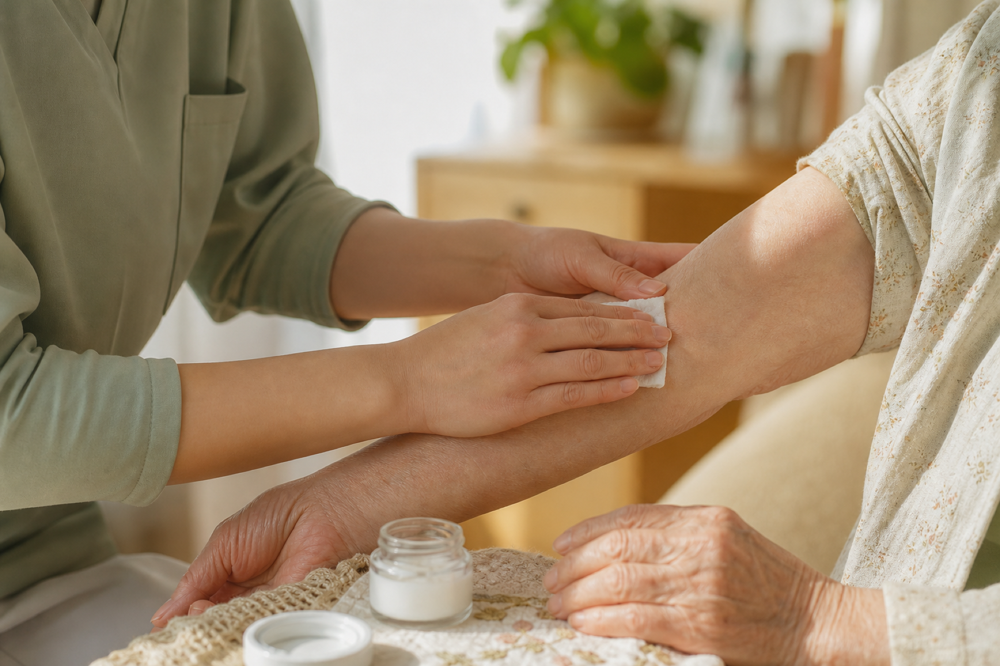
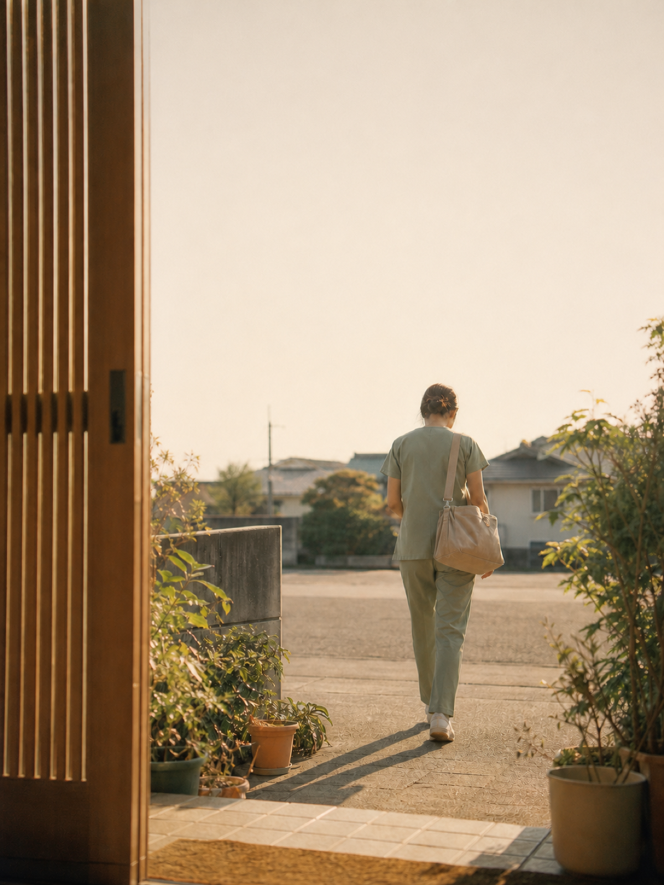
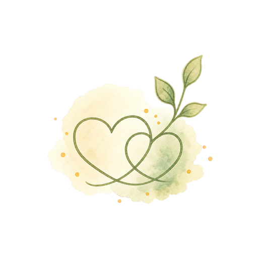

皮膚・排泄ケア
SKIN & STOMA CARE褥瘡（床ずれ）の予防・管理、ストーマケア、失禁ケアまで。専門的な視点で肌トラブルを防ぎます。
担当する資格皮膚・排泄ケア認定看護師（WOC）
退院後の不安、医療処置が必要な毎日、介護するご家族の負担。皮膚・排泄ケアから医療処置、心のケアまで、ご自宅での暮らしを看護でお支えします。

退院後にやっていけるか。家族だけで抱えきれるか。不安の多くは、日常に看護が入ると軽くなります。アウルの訪問は、こんな時間です。


人数や年数ではなく、保有資格に基づく「対応できる領域」でお応えします。
褥瘡（床ずれ）の予防・管理、ストーマケア、失禁ケアまで。専門的な視点で肌トラブルを防ぎます。
担当する資格皮膚・排泄ケア認定看護師（WOC）
気管カニューレ管理、創傷処置、脱水補正など。医療依存度の高い方のご自宅療養を支えます。
担当する資格特定看護師（38行為の包括的指示に対応）

認知症や精神症状のある方、そのご家族へ。穏やかな在宅生活が続くよう心に寄り添います。
担当する資格精神看護研修 修了看護師
「うちの場合は対応できる？」と迷われたら、まずはお気軽にご確認ください。
対応可能な医療処置の一覧を見るご自宅での腹膜透析（PD）の指導・管理に対応しています。バッグ交換の手技や出口部のケアに不安がある方も、通院と在宅のあいだで迷っている方も、まずはご相談ください。
状態が複雑な方も、まずは対応可否から一緒に整理します。エリア・医療処置・訪問時間・指定番号をこちらでご確認ください。
事業所案内を見る
「最期まで、その人らしい暮らしを。」
私たちが何よりも大切にしていることです。
梟（アウル）は、暗がりでもよく見え、静かに寄り添う鳥。不安なときに相談しやすく、必要なときに医療へつなげられること。暮らしの中で続く看護を、少数精鋭の専門特化型ステーションとして大切にしています。
株式会社ふくろう 代表 矢作 貴子
夜中の発熱、急な痛み、呼吸の変化。不安が大きくなるのは、たいてい日が暮れてからです。迷ったら、お電話ください。看護師につながります。
ご本人・ご家族からのご相談、ケアマネジャー・医療機関からの確認を受け付けています。お急ぎのときは、お電話でご連絡ください。
お電話でのご相談0742-95-5001受付 9:00〜17:30